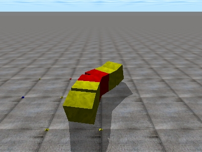

En mi tesis he estudiado la locomoción de los robots ápodos de cualquier número M de módulos. En entradas anteriores he puesto simulaciones de robots de 32 y 8 módulos, de los grupos cabeceo-cabeceo y cabeceo-viraje.
El número mínimo de módulos necesarios para conseguir la locomoción en línea recta es de 2. En este vídeo se puede ver la simulación de Minicube-I. Se muestran los desplazamientos cuando se aplican diferentes valores para la diferencia de fase y amplitud:

Para lograr la locomoción en 2D se necesitan al menos 3 módulos, con conexión de cabeceo-viraje. Esta configuración mínima puede realizar al menos 5 tipos de movimientos:

Para el estudio de la cinemática de los movimientos en línea recta, he empleado modelos alámbricos. Para simularlos uso módulos “planos”: